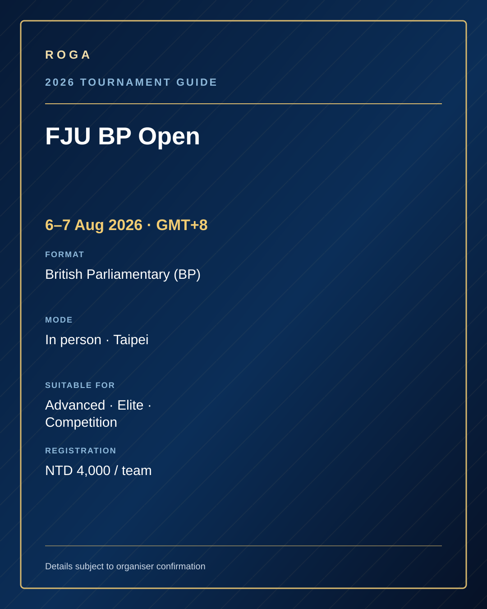

6–7 Aug 2026British Parliamentary (BP)
FJU BP Open辅仁大学 BP 公开赛
A large in-person university-hosted BP tournament with 60+ teams; ideal for practising opening strategy, extensions, whip speeches and advanced rebuttal.
由辅仁大学主办的大型线下 BP 赛事，预计 60 多支队伍参加，适合训练开篇策略、延伸论证、党鞭总结与高阶反驳。
- Time zone
- GMT+8
- Mode
- In person · Taipei
- Suitable for
- Advanced · Elite · Competition
- Eligibility
- Age 14+
- Fees
- NTD 4,000 / team
- Deadline
- ROGA internal: 20 Jun
- Speech time
- 7-minute speeches
- Topics
- Impromptu
ROGA training focus
BP opening strategy · Extensions · Whip speeches & weighing · Advanced characterisation · Advanced rebuttal · Spar
 Grace · WeChat / 微信
Grace · WeChat / 微信 Grace · WhatsApp
Grace · WhatsApp